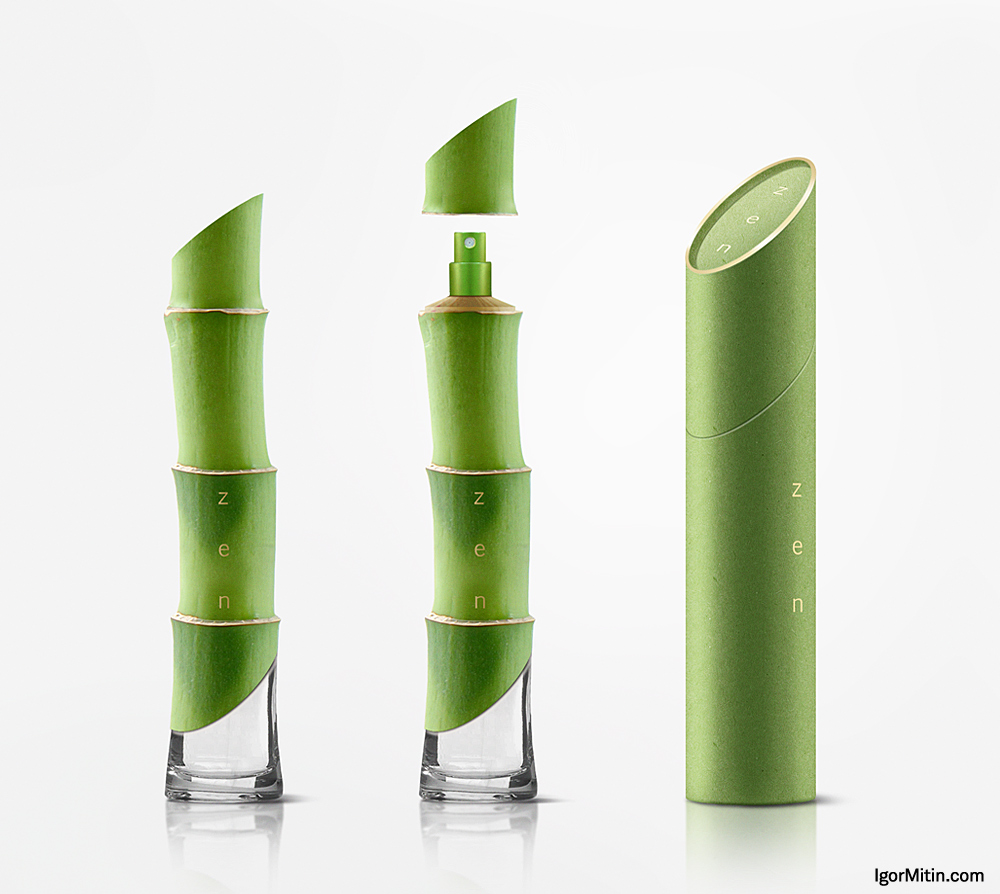

WELCOME TO NATURE PERFUME
BAMBOO PERFUME.
BAMBOO PERFUME
- Bamboo is a clean, green fragrance. It is a favorite for guests wanting a green leafy smell. It has a little citrus hint of lime with a bit of a cucumber finish. The natural, subtle character of this fragrance is calming rather than overwhelming, it works great with aromatherapy type blends - where a room filling, not house filling fragrance is what you are looking for. This is one of our more popular fragrances because it blends well with so many different fragrance types. I like this especially for bathroom mists, and candles. It does a good job covering up unwanted smells in a clean outdoorsy way. Don't be afraid of this one blending with most things. I don't love it with baked good and pastry type fragrances but just about anything else works great!
|

|